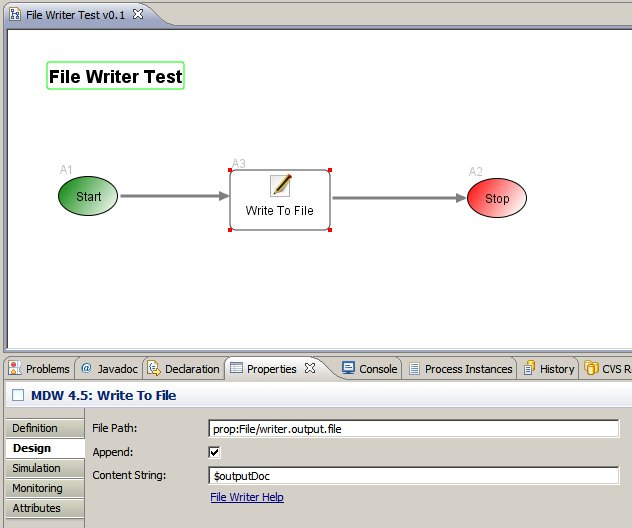

File Writer Activity
The MDW File Writer adapter activity provides the capability to write to a file on the server file system.
Design Attributes
The basic design parameters for configuring a File Writer Activity are illustrated in the screenshot below.
The first attribute to specify is the path of the file to write to.
This value can reference a property or variable using MDW's Java EL Binding syntax.
The next attribute indicates whether to append to the file. If append is not selected, the file will be overwritten with each subsequent activity execution.
In a real-world scenario, the Content String attribute will almost always be dynamic.
This can be accomplished through the use of an expression pointing to a process variable as illustrated in the screenshot.
If the variable is a document-type variable, it will be serialized to a string value using the appropriate translator.
If you need to perform some specialized output based on additional criteria, you can extend the FileWriterAdapter class and overwrite the getRequestData() method.
